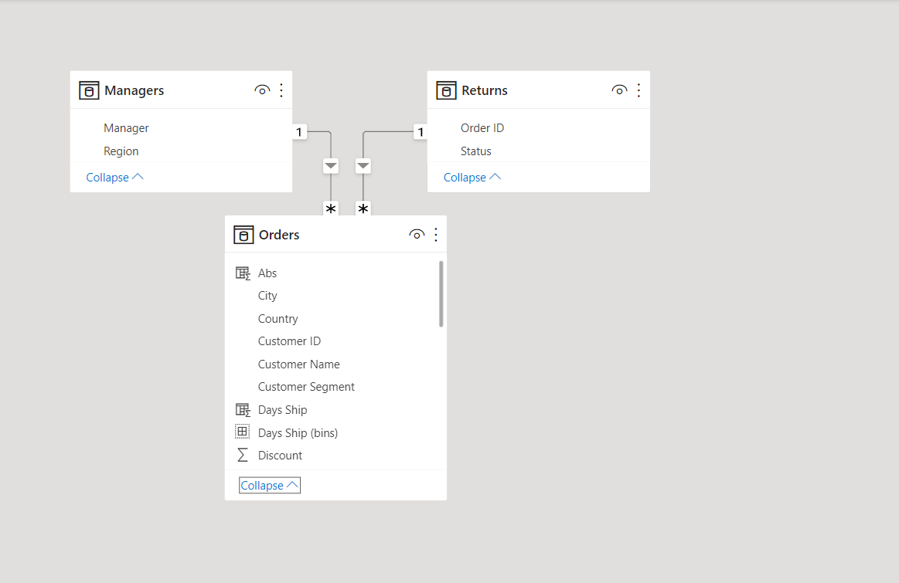
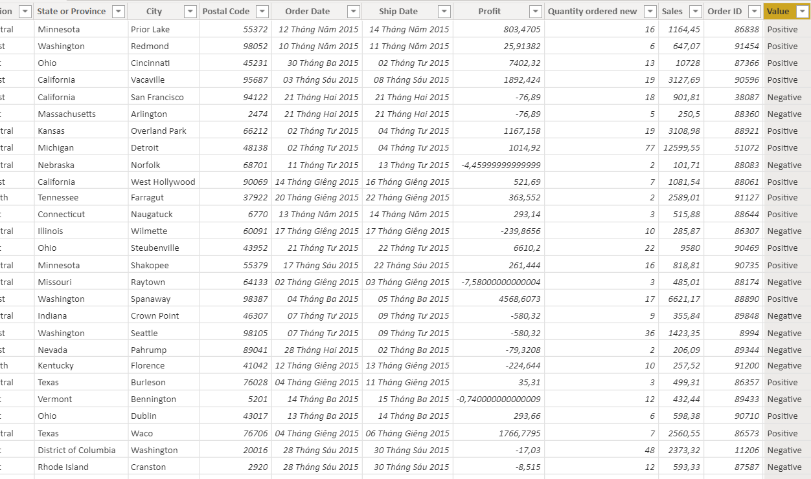
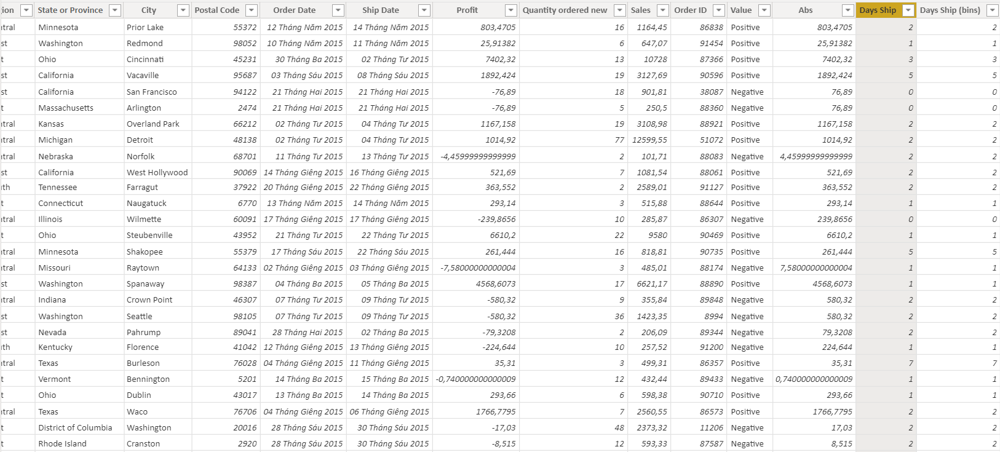
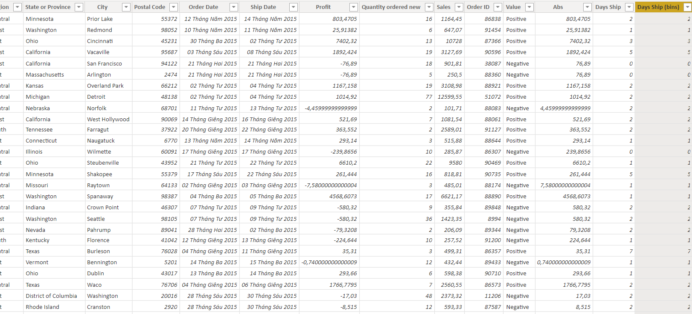

Super Store Sales Analytics
using Power BI
In this project I use Power BI to build a dashboard about sales of Super Store in the US in 2015.
- Input: Dataset of sales of an store in the US in 2015.
- Goal:
- Identify insight of business permanence which are about: sales, profit (positive and negative), customers and products.
- Identity the causes of negative profit and returned orders.
- Propose suggestions to reduce negative profits the the numbers of returned orders.
- Result:
- Insights
- Negative profit accounted for 36,12% in total. It was a significant figure so the business has to take it into consideration.
- Office Supplies brought the most Positive profit and the least Negative profit.
- The majority of customers brought between 0 to 20K revenue (Sales) to the business.
- Profit had the most fluctuation from April to June. It means that people shopped the most in summer.
- People tended to buy Technology products in the first quarter of 2015 while Office Supplies were bought the most in April.
- Most of the negative profit came from orders which were shipped within 4 days.
- 3/4 of returned orders were shipped by Regular Air. It shows that Regular Air Ship Mode was not effective.
- Suggestions
- Business should ship to customers under 3 days to decrease negative profit.
- Improve the quality of Regular Air ship mode to reduce the negative profit.
- Promoting marketing Technology products in the first quarter and Office Supplies in April.
- Insights
- Project Duration
- Data reprocessing and description
- Building dashboards and analyzing
- Conclusion
- Data reprocessing and description

The data consists of 3 tables:
- Orders: includes information about customer transactions from January to June 2016.
- Return: aggregates the rows with negative profits in the Orders table-returned orders.
- Managers: Includes information about the manager name of each region.
Information about the Orders table property is as follows:
- Row ID
- Order Priority
- Discount
- Unit Price
- Shipping Cost
- Customer ID: unique for each customer
- Customer Name
- Ship Mode
- Customer Segment: there are 4 customer segment: Small Business, Corporate, Consumer and Home Office
- Product Category
- Product Sub-category
- Product Container
- Product Name
- Product Base Margin
- Country
- Region
- State or Provine
- City
- Postal Code
- Order Date
- Ship Date: date customer receive their packages
- Profit: negative when goods is returned
- Quantity order new: quanity
- Sales
- Order ID: unique for each order
I create Value column to distinguish negative and positive profit rows
Value = IF(Orders[Profit]>=0,"Positive","Negative")I create Days Ship column to determine how many days it take to ship to customers.
Days Ship = DATEDIFF(Orders[Order Date],Orders[Ship Date],DAY)I create Days ship bins to draw the histogram chart to illustrate the distribution of days ship

I build the first dashboard to explore insight about the profit.
As we see, total profit that the business got was 2240,08K. Meanwhile, negative profit accounted for 36,12% in total. It was a significant figure so the business has to take it into consideration.
The Positive and Negative Profit by category shows that Office Supplies brought the most Positive profit and the least Negative profit. It means that this Category was important and the business should promote it.
The Sales and Profit by Customer scatter chart shows that the majority of customers brought between 0 to 20K revenue (Sales) to the business. More than a half of them are in the 0 to 10K profit area while the rest of them brought negative profit.
The Profit by Region shows that the profit in 3 regions was quite similar.
The Positive and Negative Profit by city shows the total positive and negative profit of each city. This chart helps us find top cities that brought the best and worst profit.
Top 10 cities had the highest profit
I build the second dashboard to explore insight about the time.
The Profit by Date chart shows the fluctuation of profit by date in the first 6 months in 2015. We see that profit in May and June was always above 0. Meanwhile, profit reached the lowest point and highest point in April. It shows that profit had the most fluctuation in April. It means that people shopped the most in summer.
The Sales by Month and Category shows that people tended to buy Technology products in the first quarter of 2015 while Office Supplies were bought the most in April.
The Days ship by orders chart shows that the majority of orders were shipped from 0 to 2 days, which means that the shipping system was quite productive.
The Days ship of negative profit chart shows that the second quarter brought the most positive profit with less negative profit.
The Profit by Month and Category chart shows that the second quarter brought the most positive profit with less negative profit.
I build the third dashboard to explore insight about the customer.
The Top 5 customer with highest profit and Top 5 customers with highest Negative Profit will help us find the most profitable to give them special discounts to increase their loyalty and the most unprofitable customers to propose some solutions when they order high value orders to minimize the negative profit.
The Count of Order by Order Priority shows that the proportion of customers in these groups are quite similar.
The Count of Order with Negative Profit by Ship Mode shows that 3/4 of returned orders were shipped by Regular Air. It shows that this Ship Mode was not effective so the business should improve the quality of this Ship Mode.
The Count Customer by Customer Segment shows that Corporate groups have the most customers while the percentage of customers in 4 regions is quite similar
- Insights
- Negative profit accounted for 36,12% in total. It was a significant figure so the business has to take it into consideration.
- Office Supplies brought the most Positive profit and the least Negative profit.
- The majority of customers brought between 0 to 20K revenue (Sales) to the business.
- Profit had the most fluctuation from April to June. It means that people shopped the most in summer.
- People tended to buy Technology products in the first quarter of 2015 while Office Supplies were bought the most in April.
- Most of the negative profit came from orders which were shipped within 4 days.
- 3/4 of returned orders were shipped by Regular Air. It shows that Regular Air Ship Mode was not effective.
- Suggestions
- Business should ship to customers under 3 days to decrease negative profit.
- Improve the quality of Regular Air ship mode to reduce the negative profit.
- Promoting marketing Technology products in the first quarter and Office Supplies in April.